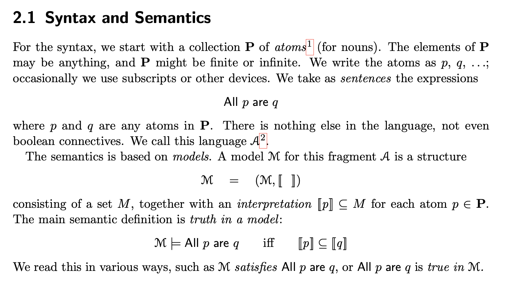
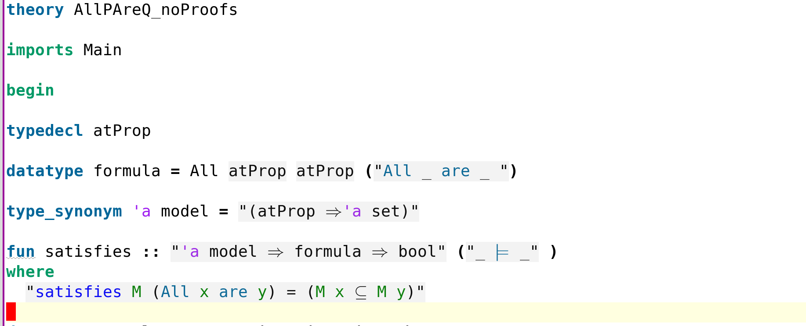

Syllogistic Logics in Isabelle#
Introduction#
The purpose of this tutorial is to give a first introduction to the proof assistant and interactive theorem prover (ITP) Isabelle.
An ITP is used to help humans to formalize proofs. You can think of an ITP as a programming language in which programs are mathematical proofs. There are many different ITPs and Isabelle is one of the most widely used ones and has been at the cutting edge of the field for many decades. So it is definitely worth seeing an example of Isabelle in practice.
This leaves open the question of what to prove. One typical choice would be to apply Isabelle to proving the correctness of programs. This is a very good way to learn about ITPs in general and Isabelle in particular. For this I recommend the book Concrete Semantics.
Here I want to follow another idea. Throughout CPSC-510 Logical Foundations of Computing, we put a lot of emphasis on various software tools. I think it is time to return to their logical foundations. So here I want to apply Isabelle to logic itself. In particular, we will formalize the soundness and completeness proof of a particular logic.
As we have discussed earlier, soundness and completeness is often the first theorem one wants to prove about any logic. We have seen, but not formally proved, that, for example, the tableaux method is sound and complete for classical propositional logic. Simlarly, there are soundness and completeness theorems for predicate logic, temporal logic, (dynamic) epistemic logic, etc.
Since our aim is a first introduction, the following question arises. What is the simplest meaningful example of a logic for which one can explain (and formalize) soundnessn and completeness?
Fortunately, this question has been asked and answered convincingly by Larry Moss in his work on syllogistic logics.
Setting Up#
Download the latest version of Isabelle, Isabelle 2025 at the time of writing.
Open AllPAreQ_noProofs.thy from the Isabelle IDE.
Open Moss’s book Logic From Language and read the introduction.
See also this Isabelle Tutorial.
The Completeness Theorem#
In this tutorial we will be reading Section 2.1-2.4 of the book while at the same time formally proving its theorems in Isabelle. The logic we will consider has only two rules
and the main theorem we are going to prove, the completeness theorem, is
The strategy of the proof will be the following. Given \(\Gamma\), we build a so-called canonical model \(M_\Gamma\) from \(\Gamma\) which, by construction, has the properties that
\(M_\Gamma\models \Gamma\)
\(M_\Gamma\models \phi \Rightarrow \Gamma\vdash\phi\)
Now the claim of theorem follows:
1 Assumption: \(\Gamma\models\phi\)
Show: \(\Gamma\vdash\phi\)
2 Have: \(M_\Gamma\models \Gamma\) … (by definition of \(M_\Gamma\))
3 Have: \(M\models \Gamma \Rightarrow M\models\phi\) for all models \(M\) … (by definition of \(\models\))
4 Have: \(M_\Gamma \models \phi\) … (from 2 and 3)
5 Have: \(\Gamma\vdash\phi\) … (by 4 and definition of \(M_\Gamma\))
Remark: Every model of \(\Gamma\) satsifies all consequences of \(\Gamma\). But the canonical model also refutes everything that is not derivable from \(\Gamma\). This is the most important idea for completeness: If \(\Gamma\not\vdash\phi\) then find a model \(M\) such that \(M\models\Gamma\) and \(M\not\models\phi\).
The Formalization#
Since we will implement Chapters 2.1-2.4 of the book in Isabelle, it is a good a idea to arrange the windows on your screen so that you can simultaneously see the book Logic From Language and the Isabelle IDE with the theory AllPAreQ_noProofs.thy (there is also a theory with the proofs but that would be spoiling it).
Let us start with the beginning of Chapter 2.1 from Logic From Language

which is formalized in the Isabelle/HOL theory AllPAreQ_noProofs.thy by

Explanations:
AllPAreQ_noProofsis the name of the theory, which must agree with the name of the file. The filename cannot contain-(dash or minus).typedeclintroduces a new abstract (uninterpreted) type. It has no constructors or axioms, but is guaranteed non-empty. Use it for “there exists some base set of atoms” without committing to any structure.datatypeintroduces an algebraic datatype with constructors (here: one constructor, All). Isabelle generates induction/recursion principles, case-splits, and simplification rules. Use when you need pattern matching, recursion, and structural induction over syntax.("All _ are _ ")declares “syntactic sugar”.type_synonymdoes not create a new type. It only gives a shorter, domain-specific name to an existing type expression. Use for readability and conveying intent.definitionintroduces a constant by conservative definitional equality. Use for naming predicates and functions defined by equations. The left-hand side cannot pattern-match; use “where” and pattern-match inside the right-hand side (e.g., via let or case).fundefines functions by pattern matching and (if needed) recursion, generating simplification rules automatically.
Exercise/Activity: Add a lemma stating that M ⊨ All p are q iff M p ⊆ M q. [1]
Let us now continue in the book Logic From Language with
which is in the Isabelle/HOL theory AllPAreQ_noProofs.thy
Exercise/Activity: Prove the lemma using sledgehammer.
… tbc …